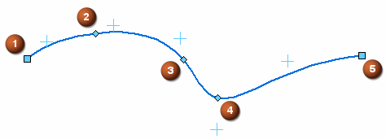

Draw a curve

-
Choose the Curve command .
-
(Optional) To create a closed curve, with tangentially connected first and last points, on the Curve command bar, click Closed
 .
. -
Do one of the following:
-
Click three or more points, then right-click to end the curve.
These points represent edit points on the curve.
-
Click and drag the shape of the curve you want.
-
-
You can use the Close Curve option to close or open previously created curves without adding or removing points. Select the curve to edit, and then select or clear the Close Curve button on the command bar.
Note:To use the Close Curve option for editing, the curve must be defined by three or more points. It cannot be defined by dragging the curve shape.
-
You can use the options on the Curve command bar and the commands on the shortcut menu to control the display or edit mode for a curve.
-
You can use the Curve Options dialog box to change the relationship mode or number of degrees for a curve. To display the dialog box, on the Curve command bar, click the Curve Options button.
How do I
Display the control polygon for a curveInsert or remove points on a curve
Simplify a curve
Convert analytic geometry to a b-spline curve
Draw a conic curve
Edit a conic curve
Look up more details
Curve commandCurve command bar
Curve Options dialog box
Conic command
Conic command bar
Simplify Curve command
Simplify Curve dialog box
Convert To Curve command